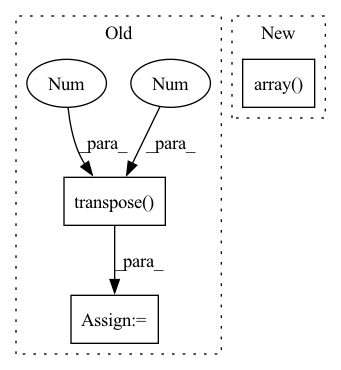

Pattern ID :11618
Before Change
img = letterbox(img, new_shape=imgsz)[0]
//print(img.shape[:2])
img = img.transpose(2 , 0 , 1)
img = torch.from_numpy(img).to(self.device)
img = img.float() // uint8 to fp16/32
img /= 255.0 // 0 - 255 to 0.0 - 1.0
if img.ndimension() == 3:
img = img.unsqueeze(0)After Change
imgsz = check_img_size(max(img.shape[:2]), s=self.detector.stride.max()) // check img_size
img = letterbox(img, new_shape=imgsz)[0]
pp_imgs.append(img)
pp_imgs = np.array( pp_imgs)
pp_imgs = pp_imgs.transpose(0, 3, 1, 2)
pp_imgs = torch.from_numpy(pp_imgs).to(self.device)
pp_imgs = pp_imgs.float() // uint8 to fp16/32
pp_imgs /= 255.0 // 0 - 255 to 0.0 - 1.0In pattern: SUPERPATTERN
Frequency: 3
Non-data size: 3
Instances Fragment ID: 39288279
Project Name: elyha7/yoloface
Commit Name: 794e25df420f25fd7937e0af41fefd7bf184fad6
Time: 2022-01-10
Author: artemrebrikov@gmail.com
File Name: face_detector.py
M Class Name: YoloDetector
N Class Name: YoloDetector
M Method Name: _preprocess(2)
N Method Name: _preprocess(2)
M Parent Class:
N Parent Class:
M File Name: face_detector.py
N File Name: face_detector.py
M Start Line: 67
M End Line: 83
N Start Line: 66
N End Line: 82
Before Change
Note that we need to transpose the input coming from matlab because there we don"t have the issue with regard
to coordinate axis order and image axis.
frames = frames.transpose(-1 , -2 )
print("Matlab binary loaded. File: {}".format(mat_file))
return emitter_set, extent, framesAfter Change
loc_dict = f["saveloc"]["loc"]
xyz = torch.cat([
torch.from_numpy(np.array( loc_dict[self.x_key]) ).permute(1, 0),
torch.from_numpy(np.array(loc_dict[self.y_key])).permute(1, 0),
torch.from_numpy(np.array(loc_dict[self.z_key])).permute(1, 0)
], 1) Fragment ID: 39288274
Project Name: turagalab/decode
Commit Name: d73686eebd6669ed42a1f4a4213d5105ba66a1d4
Time: 2020-02-04
Author: gitdev@LRM.photo
File Name: deepsmlm/generic/inout/load_save_emitter.py
M Class Name: MatlabInterface
N Class Name: MatlabInterface
M Method Name: load_binary(2)
N Method Name: load_binary(2)
M Parent Class:
N Parent Class: BinaryInterface
M File Name: deepsmlm/generic/inout/load_save_emitter.py
N File Name: deepsmlm/generic/inout/load_save_emitter.py
M Start Line: 66
M End Line: 87
N Start Line: 88
N End Line: 107
Before Change
source, sr = librosa.load(sources_data[_source]["path"], sr)
source = source[start_idx: end_idx].mean(axis=1, keepdims=True)
sources.append(source)
sources = np.concatenate(sources, axis=1).transpose(1 ,0 )
mixture = torch.Tensor(mixture).float()
sources = torch.Tensor(sources).float()
After Change
source, sr = librosa.load(sources_data[_source]["path"], sr, mono=True)
source = source[start_idx: end_idx]
sources.append(source)
sources = np.array( sources)
mixture = torch.Tensor(mixture).float()
sources = torch.Tensor(sources).float()
Fragment ID: 39288270
Project Name: tky823/dnn-based_source_separation
Commit Name: 257c6a90236d368432ccc996cdb8ce51259ae93f
Time: 2020-12-29
Author: 40362510+tky823@users.noreply.github.com
File Name: egs/dsd100/common/src/dataset.py
M Class Name: WaveDataset
N Class Name: WaveDataset
M Method Name: __getitem__(2)
N Method Name: __getitem__(2)
M Parent Class: DSD100Dataset
N Parent Class: DSD100Dataset
M File Name: egs/dsd100/common/src/dataset.py
N File Name: egs/dsd100/common/src/dataset.py
M Start Line: 44
M End Line: 51
N Start Line: 44
N End Line: 52